Designing a Kid-Friendly Eye Dropper
For the final project in my Advanced Design and Manufacturing class, I was tasked with designing a device from start to finish to address a biomedical need. I decided to tackle a problem which I found personally relevant: how to get children to sit still and take eye drops from their parent. I remember my horrific experiences as a kid who was afraid of the eye dropper, so I set out to solve the problem through the process of research, ideation, design, mechanical analysis, and cost analysis.
This project culminated in a video that tells the story of my device, which can be found here. The slides below show the content of the video.
Eye drops are packaged in a small, squeezable dropper bottle to help treat medical conditions such as dry eyes, allergies, and infections. According to pediatric Dr. Sidney Weiss, it is daunting at times for both parents and physicians to administer eye drops to children because kids get scared easily and can’t sit still.
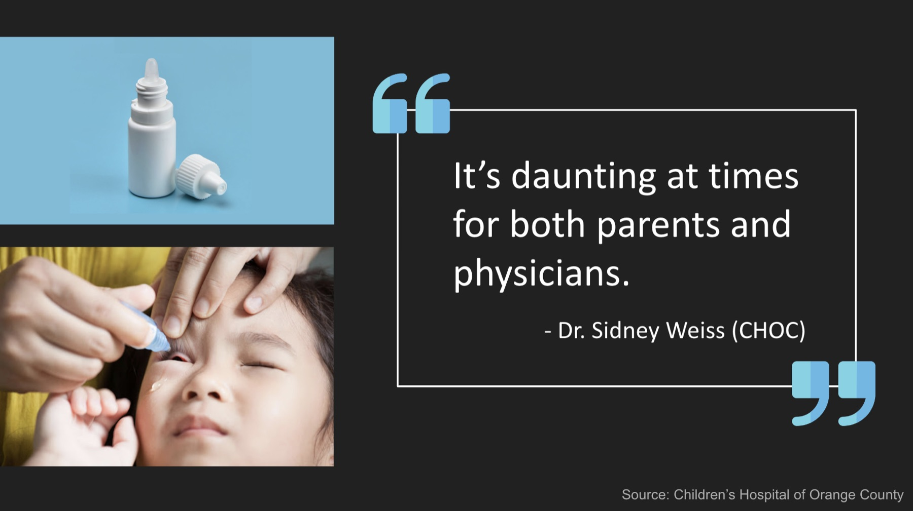
There are several design inputs to consider with this problem. Ideally, the device would be able to adapt to the existing dropper bottle. It must also be unintimidating to children, have no sharp edges, and discourage cross-contamination.
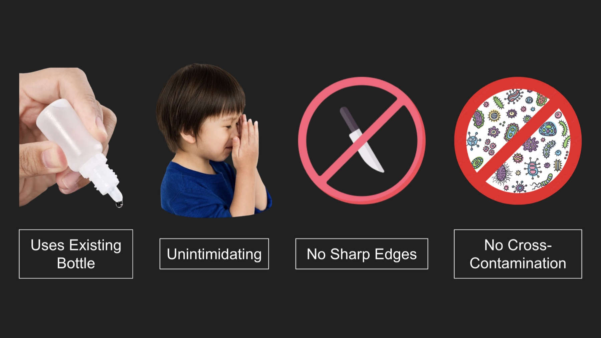
Here is a mood board filled with some medical devices and toys I found in my research. I took inspiration from how these devices used bright colors, organic shapes, and happy characters to disguise something scary for children.
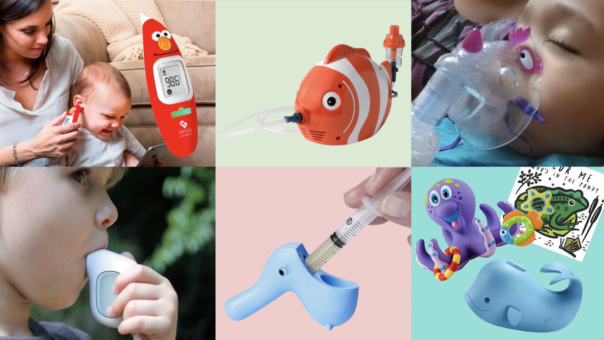
I started by drawing some sketches and iterated on a design until I settled on a kid-friendly, penguin-shaped bottle holder.
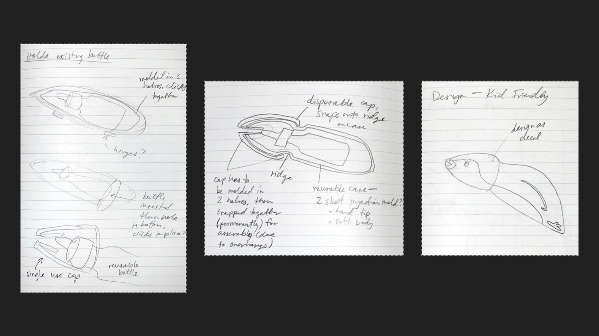
Here is the final design rendered in CAD.

If you click the image below, you can see an animation of the device. The cap where the penguin’s head is located is made out of hard polypropylene, while the body is made of silicone, so it’s soft and squeezable. Zooming in on the back shows where the eye dropper bottle fits into the device. Removing the bottle reveals the inside, which has ribs to support the bottle and keep it in place. When the bottle is inserted into the device, it clicks into place so that it will not fall out.
The eye drops come out of this hole in the front of the device when it is squeezed. From a top view you can see some cut outs where the device can be squeezed by a parent as they’re administering the eye drops to their child.
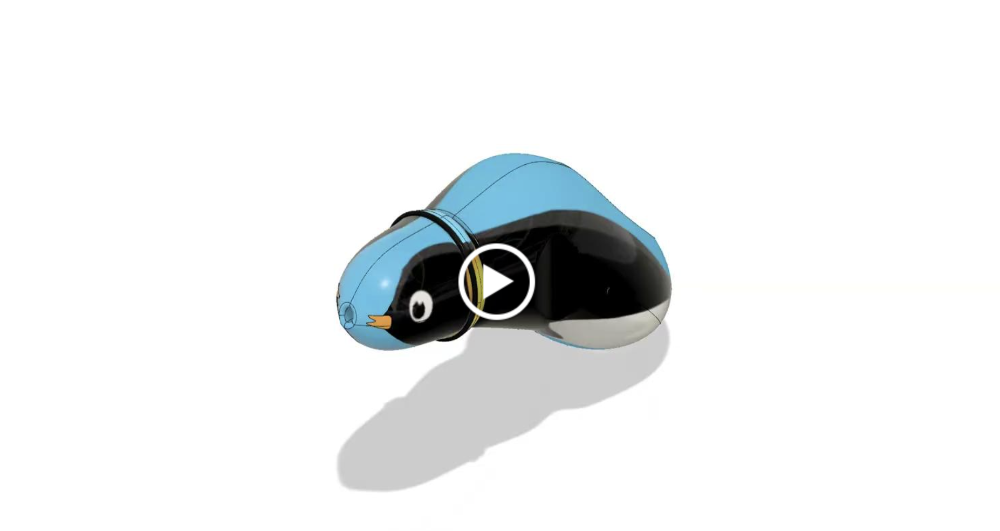
The device matches the contour of a child’s face so that it can be held out of sight. It drops eye drops into the corner of the eye so that they dribble in, which makes it easier for children who flinch at droplets falling directly into the eye, according to Dr. Weiss.
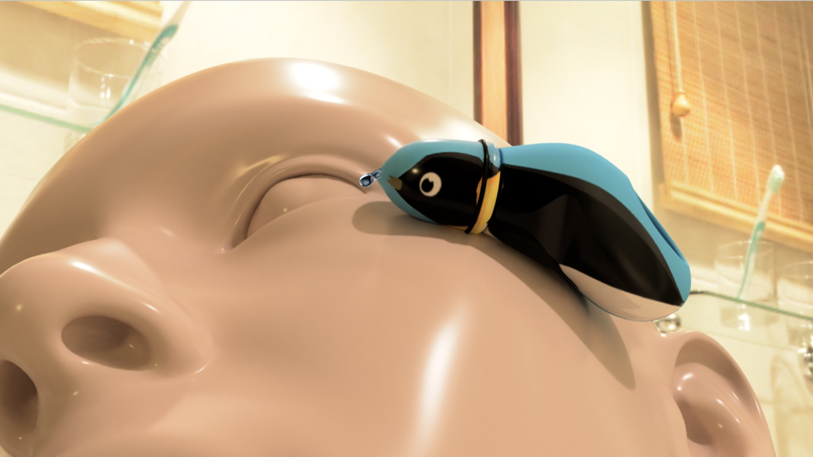
The device has a removable, disposable cap in the case of contamination. An inner shell holds the bottle in place and some ribs help translate the force of squeezing into the bottle.
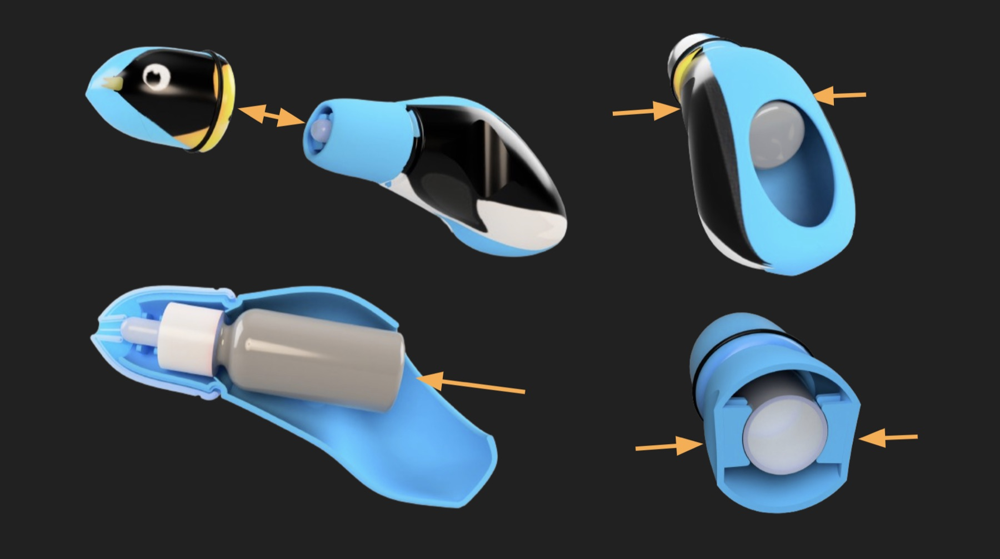
If you click the image below, you can see a finite element analysis that I ran to confirm that squeezing the device with 10 N of force translated into enough displacement in the bottle to create eye drops.
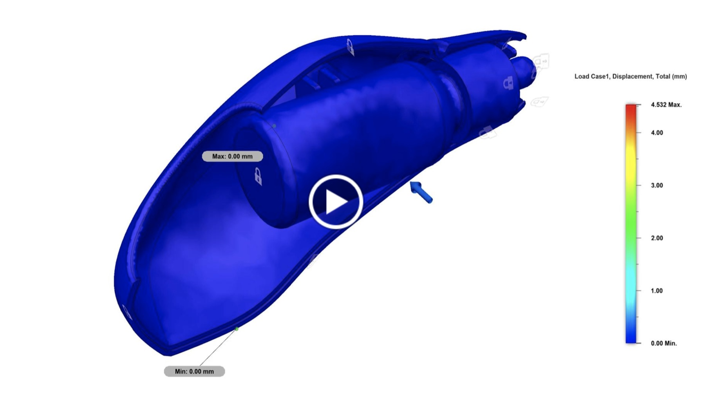
In this cross sectional view you can see the alignment features of the hard cap and the underlying soft shell. The o-ring on the outside of the cap holds the two halves of the cap together, while the interlocking edges on the soft shell snaps them together. The bottle mates nicely with a channel in the cap and is held securely with the snap fit shown in the upper right.
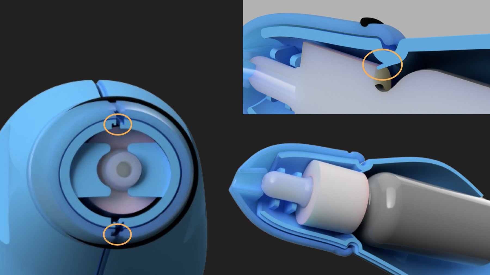
Removing the decal from the device shows that the beak of the penguin is actually a conveniently placed two-shot injection mold, which is meant to reduce sink on either side of the channel in the cap.
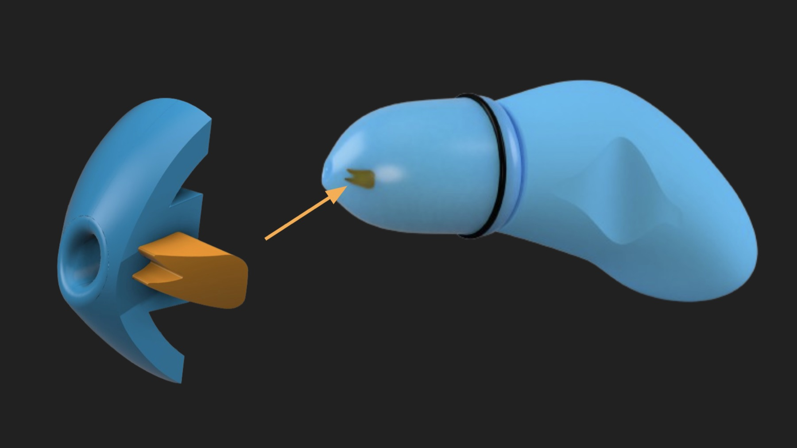
I performed a draft analysis on all injection molded parts to confirm that the parts were moldable. The interlocking edge on the silicone part has an overhang that would not normally be injection mold compliant, but because of the soft nature of the material, it is still feasible.
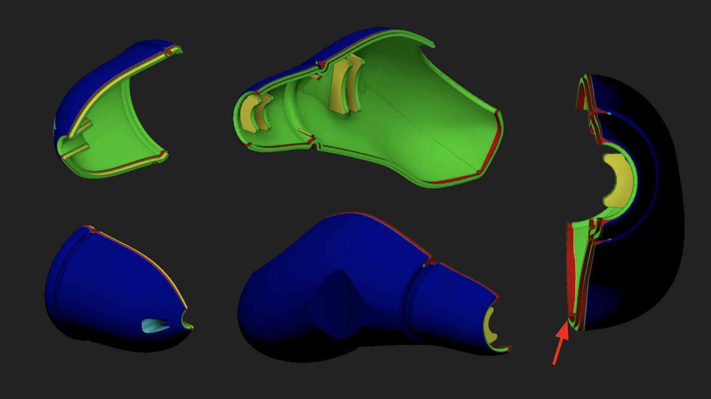
Finally, I performed an Labor, burden, and materials analysis of the device. I included 8 disposable caps in the set so that the device could be used at least 4 times in each eye. With this set, the device costs $4.64 to make at a scale of 100,000 units. This means that the final cost of the device would be about $12.70, which puts it at a competitive cost point relative to eye drops themselves, which are generally between $10 and $20.
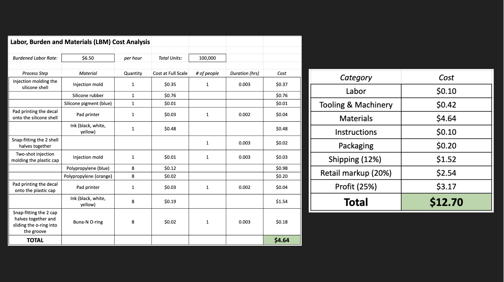
I had lots of fun with this process, and I believe it shows with the quality of my final product. Every component of the design has been thought through, and I spent countless hours creating the CAD to make my vision come to life. I look forward to channeling this passion into my work as a designer in the medical device industry!